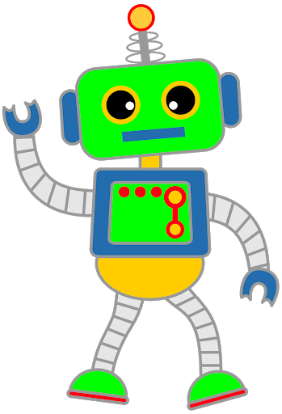

Obedient Robot

Goal:
Make an obedient robot that will obey commands to draw shapes.
Steps:
- This recipe practices writing and calling void methods.
- Make a new class, create a main method, and show the robot.
- Have the robot draw a square.
- Put this code into a drawSquare() method.
- Have the robot draw a triangle.
- Put this code into a drawTriangle() method.
- Have the robot draw a circle.
- Put this code into a drawCircle() method.
- Ask the user which shape they want. Draw the appropriate shape depending on their answer (call the right method).
- Ask the user which color they want. Give them some choices so you don't have to accomodate every possible color. Color the the shape depending on their answer.